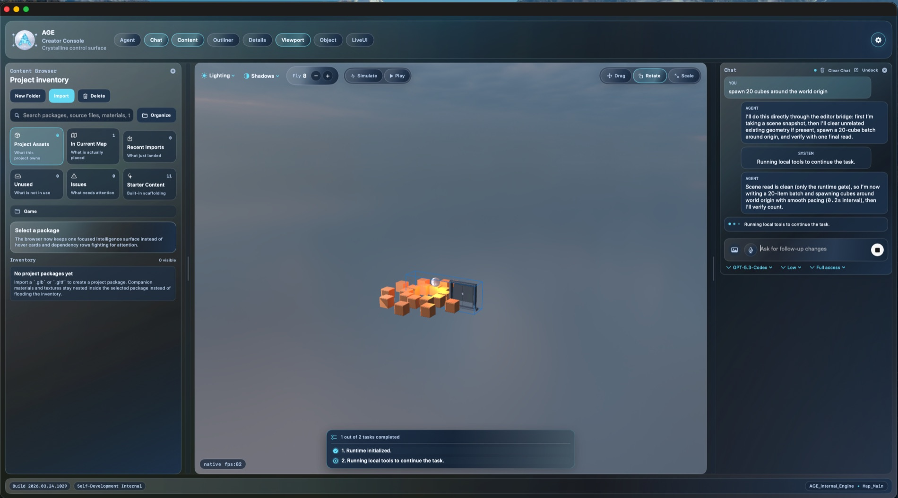
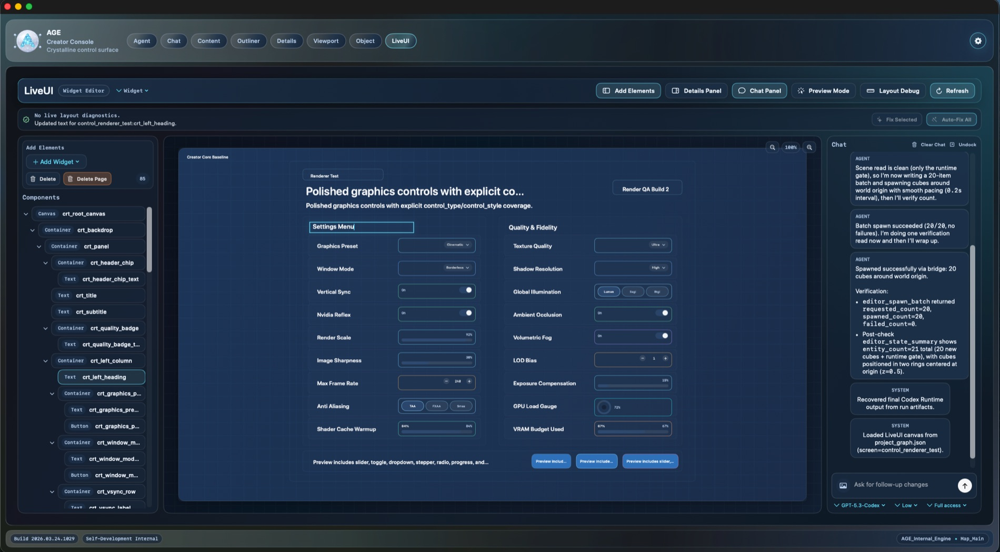
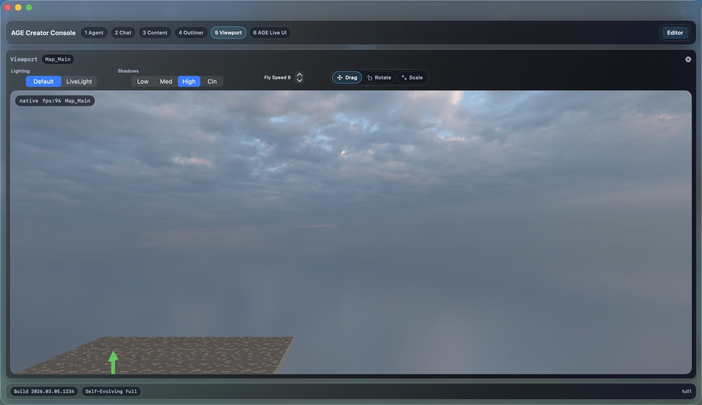

What I can build
- Dashboards and admin panels
- Workflow systems and internal portals
- AI-assisted utilities for repetitive team tasks
- Custom lightweight business apps
Internal Tools / Automation
For teams that need useful systems fast: dashboards, admin workflows, and AI-assisted utilities shaped around real operations.
Examples

Ops Dashboard
Good for operational visibility, approvals, queues, and status tracking without overcomplicating the system.

Workflow Portal
Useful when generic software creates workarounds instead of solving the process.

AI Utility
Best when the goal is saving team time with a narrow, clearly defined workflow rather than a massive platform.
Process
Find the bottleneck, the duplicate effort, and the decisions that need a clearer interface.
Start with the dashboard, panel, or flow that removes the most friction.
Use the team quickly, spot edge cases, and simplify based on actual usage.
Bring AI or workflow automation into the narrow tasks where it saves time reliably.
If the current process is spread across spreadsheets, chat threads, and manual follow-ups, I can help turn it into one usable system.
Talk About a Tool BuildContact
Send a short brief and I will reply with next steps.
Direct contact
Email for detailed briefs. WhatsApp for faster coordination.